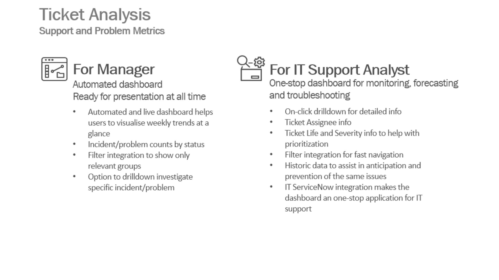
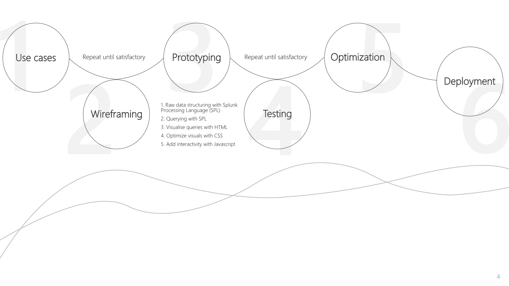
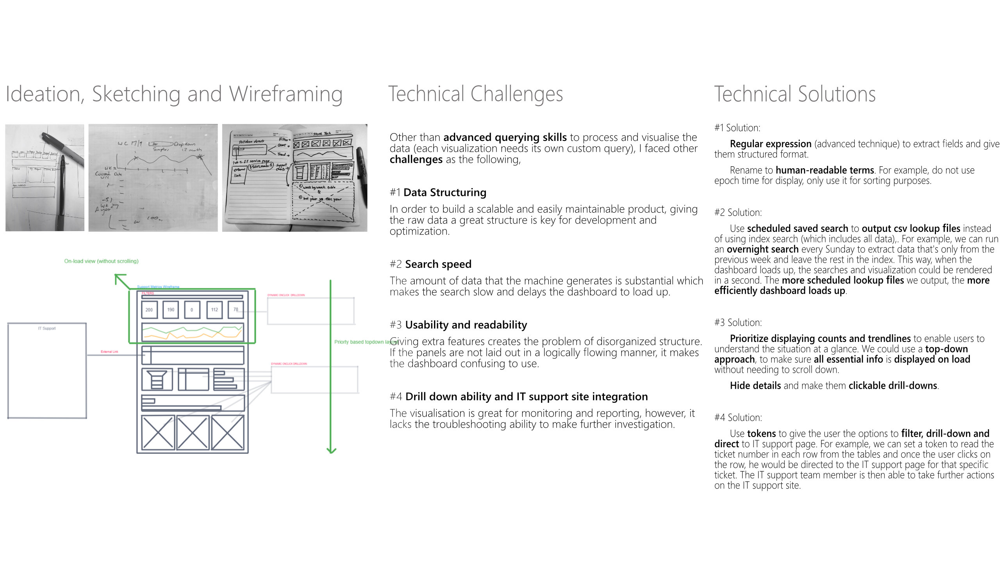
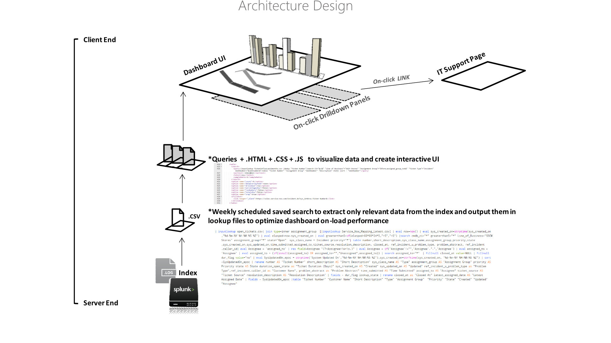
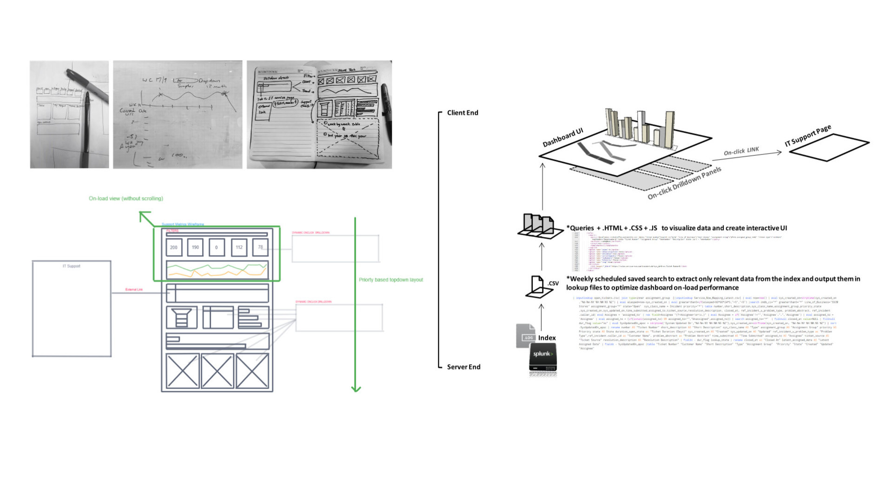

Splunk | Data Visualisation | Interactive | Front-end Dev | Unix | Agile
Splunk is a machine data processing tool that is considered the industry standard in IT Operation. It is an extremely valuable skill to have on a product development team due to its ability to process any type of data imaginable and to make data-driven research and analysis.
During 2018-2019, positioned as a certified Splunk resource at Accenture, I contributed in the development of 10+ Splunk applications for Coles, top 2 Australian supermarket, retail and consumer services chain. My role was to improve the client's IT operation by building tailored Splunk Applications to monitor, forecast and troubleshoot any business issue.
The selected work is the Support Metrics dashboard from the Ticket Analysis Applications, an interactive Splunk application that helps the IT team to quickly get the grasp of how its operation has been progressing through live data visualization. It is made with Splunk Processing Language and custom frontend codes. With live data feeding and IT Support ServiceNow system integration, this dashboard reduces the repetitive data consolidating work that the IT members had to do on a weekly basis.
Background
The main concern that our client had was the lack of transparency between the IT department and the business operating division. The business team often accused the IT department of not doing a great job because they "felt" like there had been a lot of incidents. However, it was often not the case, and when the client was questioned at a weekly meeting he was not able to show actual data to back up his defence. What he ended up doing was to manually extract the machine data and calculate the tickets count every Sunday before the meeting on Monday. That required efforts and was not very efficient.
Hence, we proposed this interactive dashboard with the following features.

Process




A part of a bigger package
The dashboard I developed was packaged in the myWizard Application. You can watch the intro video here!